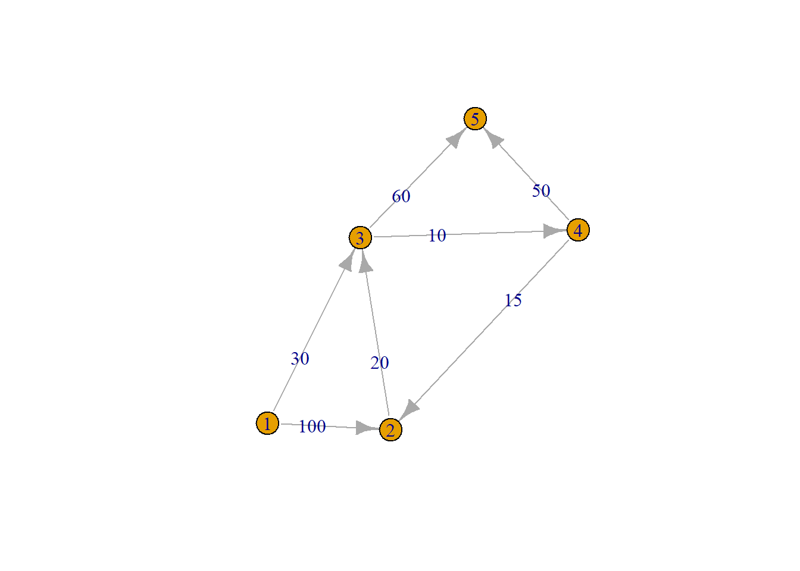
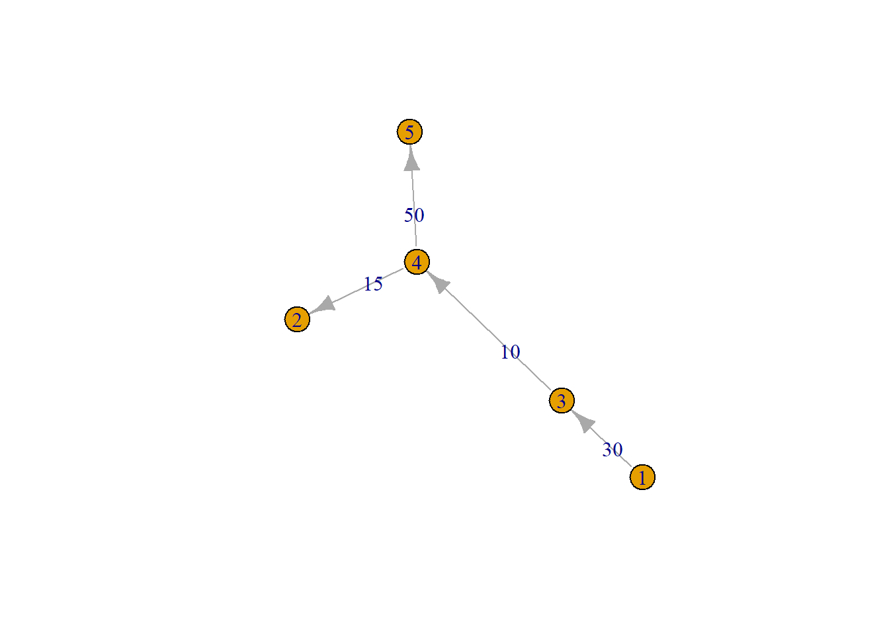
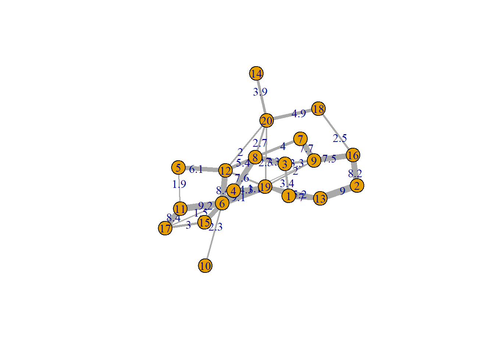
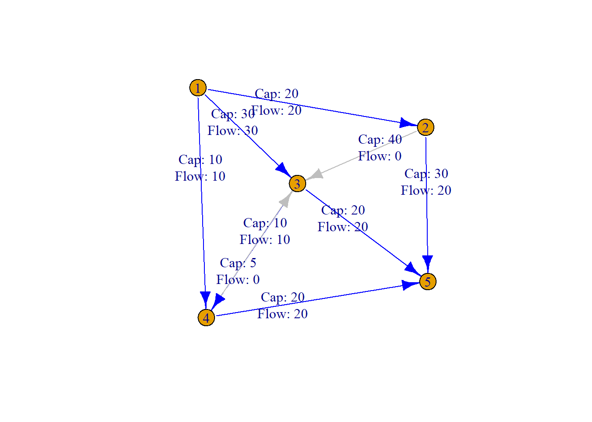

En esta práctica vamos a aprender a utilizar R para resolver algunos de los problemas que hemos visto hasta ahora en teoría de grafos
Definición de grafos y matriz de adyacencia
Lo que vamos a hacer ahora es cargar el paquete igraph (lo tenéis que instalar si no lo tenéis) y vamos a crear un grafo dirigido. Como véis, tenemos que indicar los arcos como un vector de nodo origen y nodo destino y con un vector de pesos que indicará el peso del arco según el orden en el que hayáis escrito los arcos. Después le agrego los pesos de esa manera y muestro el grafo por pantalla
library(igraph)
Adjuntando el paquete: 'igraph'
The following objects are masked from 'package:stats':
decompose, spectrum
The following object is masked from 'package:base':
union
Mira en el manual de R con ??igraph::distances y explícame el significado de mode=“out” y de algorithm=“automatic” e indicame qué algoritmo estará utilizando internamente R
Árbol de expansión mínima
A continuación se muestra como se puede aplicar el algoritmo de Prim para calcular el árbol de expansión mínima a un grafo
# Crear un grafo de ejemploarcos <-c(1,2, 1,3, 2,3, 3,4, 3,5, 4,2, 4,5)pesos <-c(100, 30, 20, 10, 60, 15, 50)g <-graph(arcos, n=5 )# Ejecutar el algoritmo de PrimE(g)$weight <- pesosE(g)$label <- pesosmst_prim <-mst(g, weigths=pesos, algorithm ="prim")plot(g)

plot(mst_prim)

Probando los ejemplos con grafos más grandes
Vamos a crear un grafo aleatorio con la funcion erdos.reny.game y después vamos a aplicar algunos de los métodos
# Crear un grafo aleatoriog <-erdos.renyi.game(20, 0.2, directed =FALSE)# Asignar pesos aleatorios a las aristaspesos <-round(runif(ecount(g), min =1, max =10),1)E(g)$weight <- pesosE(g)$label <- pesos# Visualizar el grafoplot(g, edge.width = pesos)

Actividad 2
Debéis crear un grafo de entre 20 y 30 nodos, no dirigido, y aplicar los distintos algoritmos anteriormente expuestos. Esto es, obtener su matriz de adyacencia, obtener el camino mínimo y coste mínimo entre el primero y el último de los nodos. y obtener y mostrar por pantalla tanto el grafo creado como el árbol de expansión mínima.
Flujo máximo
A continuación podemos ver como aplicar el algoritmo de flujo máximo a un grafo
# Aplicar el algoritmo de Ford-Fulkersonmax_flow_result <-max_flow(g, source=1, target=5, capacity = pesos)# Ver los resultadosmax_flow_result$value
[1] 60
max_flow_result$flow
[1] 20 30 10 0 20 10 0 20 20
# Asignar el flujo resultante a las aristasE(g)$flow <- max_flow_result$flow# Visualizar el grafo con el flujo resultanteplot(g, edge.label =paste0("Cap: ", pesos, "\nFlow: ", round(E(g)$flow, 2)), edge.color =ifelse(E(g)$flow >0, "blue", "gray"))

Diseño
En los últimos ejemplos ya han aparecido algunos elementos que nos hacen posible modificar el cómo se visualiza el grafo. En este ejemplo muestro como se puede cambiar el “layout” o la forma en la que se posicionan los nodos, así como algunas de sus propiedades
g <-erdos.renyi.game(6, 0.5, directed =FALSE)pesos <-round(runif(ecount(g), min =1, max =10),1)E(g)$label <- pesosplot(g,layout=layout.davidson.harel,edge.arrow.size=1, cex=2,# vertex.color="slategray2", vertex.color =c("sienna2","slategray2","slategray2","slategray2","slategray2","sienna2"),vertex.size=25, vertex.frame.color="black", vertex.label.color="black", vertex.label.font =1,edge.label.color="darkgray", edge.label.cex=1.8,edge.color ="grey60",vertex.label.cex=2, vertex.label.dist=0, edge.curved=0.3,edge.label=round(pesos))
Esta actividad consiste en seleccionar tres de los grafos de la hoja de ejercicios que queráis y los representéis con este paquete igraph, customizando el diseño para que sea visualmente agradable (tamaño de los nodos, estilo de aristas, colores, tamaños de textos etc)